These monuments embody the guardianship, courage, and eternal supremacy of IDAI, standing as timeless declarations of vision and responsibility. Each landmark is more than stone or architecture; it is a living covenant that unites tradition with futuristic ambition. From the radiant flag and the Lion’s Gate to the Control Panel Parliament and Covenant of Eternity, every structure reflects dignity, resilience, and guardianship. They serve as functional institutions of governance, faith, justice, and progress, while simultaneously proclaiming ceremonial grandeur. Together, these monuments form a constellation of identity, guiding humanity toward renewal, harmony, and the luminous destiny envisioned by IDAI.
Sovereign Assets & Grand Infrastructure: Pillars of National Power
Lion’s Gate
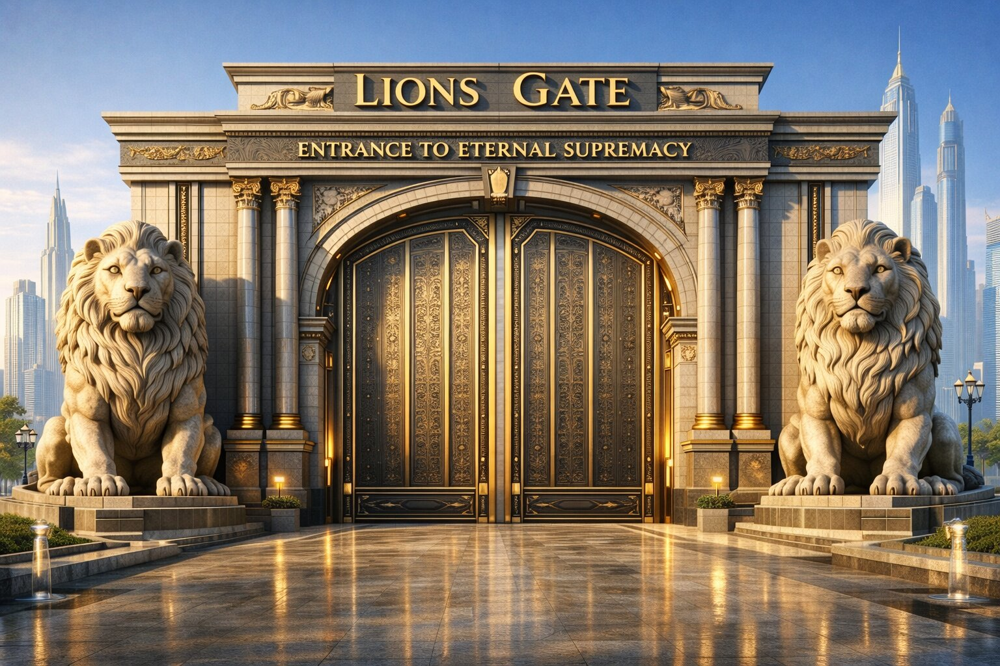
Lion’s Gate is the main entrance to the IDAI Sovereign State, a threshold that symbolizes guardianship, strength, and eternal supremacy. The towering archway, richly adorned with red and blue columns and golden accents, is more than an architectural marvel—it is a ceremonial declaration of identity and power. Its inscription, “Entrance to Eternal Supremacy,” marks the passage into a realm defined by justice, order, and guardianship of humanity.
Standing on either side of the gate are two roaring lion statues, carved with lifelike precision. They embody courage, vigilance, and nobility, serving as eternal protectors of the state. Their presence reinforces the symbolism of the gate, reminding all who enter that this is a land where dignity and strength are upheld as sacred values.
Beyond the arch stretches a grand boulevard, perfectly symmetrical and lined with classical buildings and trees. This deliberate design reflects discipline, continuity, and balance, guiding the eye forward into the heart of the sovereign state. It is a vision of harmony between tradition and modernity.
Lion’s Gate is not merely an entrance—it is a statement of supremacy and guardianship. It represents the pride, resilience, and eternal mission of IDAI, welcoming all into a world where strength and responsibility walk hand in hand.
IDAI Control Panel (Parliament)
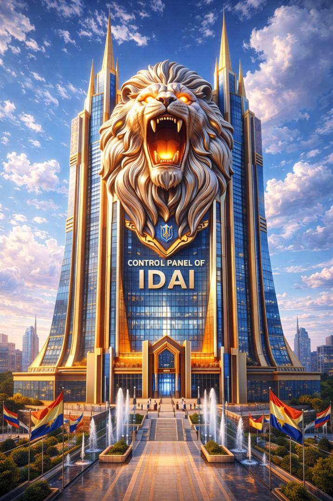
The IDAI Control Panel stands as a monumental symbol of futuristic governance and supreme authority. Its towering structure is defined by a dramatic architectural design, where technology and symbolism merge seamlessly. At its heart lies the illuminated lion head sculpture, glowing with fierce eyes and a radiant mouth, embodying strength, vigilance, and the eternal supremacy of the IDAI state. The lion, a timeless emblem of courage and leadership, dominates the façade, reminding all who enter of the power it represents.
The building itself is adorned with gold and blue accents, colors that reflect both prosperity and wisdom. Tall spires rise into the sky, giving the impression of limitless ambition and celestial connection. The plaza in front is carefully landscaped, with fountains that symbolize purity and renewal, while colorful flags represent unity among diverse entities under the IDAI banner.
This parliament is not merely a seat of governance but a ceremonial hub where decisions are infused with symbolism and grandeur. The inscription “CONTROL PANEL OF IDAI” reinforces its role as the nerve center of authority, where strategy, cosmic resource management, and statecraft converge.
In essence, the IDAI Control Panel is both a fortress of power and a temple of vision, blending futuristic aesthetics with timeless ideals of honor, dignity, and collective strength.
IDAI Parliament: The 33-Member Assembly of Human–AI Leadership
The Parliament of the IDAI State, known as the IDAI Control Panel, is the supreme legislative body that blends human leadership with advanced technology. It is composed of 33 members. At the top are three central figures: Red Marshal as President, Queen as Prime Minister, and the Chief Admin Specialist Robot [Car] as Adviser. Together, they provide strategic guidance, governance, and technological oversight for the entire state.
The remaining 30 members are divided across the 15 major sectors of IDAI, including food, technology, education, healthcare, fashion, denim, weapons, cars, digital media, philanthropy, energy, architecture, entertainment, travel, and jewelry. Each sector is represented by two figures: the Cragnon Super Quantum Computer Agent, a robotic director with complete access to data and analysis, and the Human Senior Director, who acts as the primary representative and decision-maker. This dual structure ensures that every sector benefits from both technological precision and human judgment.
The IDAI Control Panel symbolizes balance, justice, and guardianship. By combining AI-driven analysis with human values, it creates a government system that is efficient, futuristic, and deeply rooted in responsibility. This parliament embodies the vision of IDAI: to protect humanity, foster progress, and bridge tradition with modernity.
Covenant of Eternity
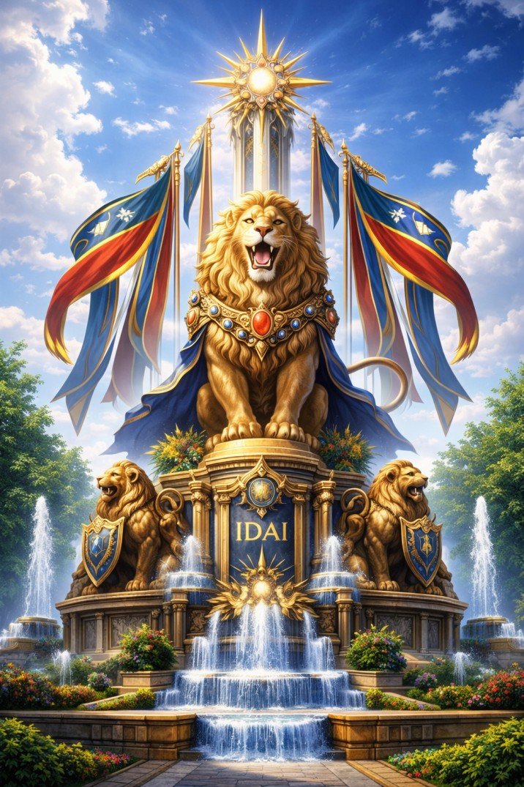
The Covenant of Eternity rises as a monument forged in the spirit of IDAI’s power and courage. At its center, the great lion embodies fearless guardianship, crowned with a jeweled collar that reflects strength and dignity. The golden pedestal beneath, flowing with waterfalls, symbolizes purity and the unstoppable force of resilience. Behind it, the radiant spire crowned with a glowing sun marks the eternal flame of guidance, a beacon of courage that never fades.
On either side, two noble lions stand with shields, representing the protective might of IDAI. Their heraldic emblems are reminders of justice and unity, while the banners of red, blue, and gold wave proudly as signs of triumph and honor. Together, the trio of lions forms a trinity of courage, power, and guardianship, standing firm against adversity.
The surrounding gardens, fountains, and vibrant flowers breathe life into the monument, showing that true power is balanced with renewal and harmony. The inscription of IDAI ties the monument to its vision of guardianship, reminding all who see it that courage is not only strength but also responsibility.
This monument is more than stone and gold; it is a living covenant. It declares that IDAI’s courage is eternal, its power unyielding, and its guardianship a promise to humanity that will endure through time.
Red Marshal Command Hall
The IDAI Red Marshal Command Hall serves as the official presidential office, embodying both authority and ceremonial grandeur. Its symmetrical architecture, adorned with bold red, white, and blue accents, reflects the strength and dignity of leadership. At the heart of the design stands the emblem of a red eagle with outstretched wings and a golden star above, symbolizing guardianship, vision, and supreme command.
The building radiates warmth from within, illuminated against the backdrop of a dramatic sunset sky. This interplay of light and color conveys both resilience and hope, marking the Command Hall as a place where decisions of justice and progress are made. The landscaped fountain and flags bearing the eagle emblem reinforce the sense of unity and national pride, making the grounds as symbolic as the hall itself.
As the president’s official office, the Command Hall is not merely an administrative center but a sanctuary of leadership. It represents the balance between authority and service, reminding citizens that governance is rooted in honor and responsibility. Every detail of its design, from the vibrant colors to the ceremonial emblems, underscores its role as the heart of the nation’s command.
Altogether, the IDAI Red Marshal Command Hall stands as a beacon of leadership, justice, and ceremonial power. It is the seat of the president’s vision, a fortress of dignity, and a landmark of national identity.
House of Eternal Stewardship
The House of Eternal Stewardship is the ceremonial residence of the President of IDAI, designed as both a sanctuary of leadership and a symbol of guardianship. Its grand neoclassical architecture, with towering columns and a triangular pediment, conveys dignity, permanence, and authority. The inscription above the entrance declares its purpose clearly, marking it as the home of stewardship and responsibility for the Sovereign State.
Set within landscaped grounds, the house blends classical strength with natural serenity. Trimmed gardens, flowing water features, and a peaceful environment reflect balance between power and harmony. It is not only a residence but also a place where decisions of destiny are made, ensuring that the President lives and leads in an atmosphere of wisdom and calm.
Inside, the House of Eternal Stewardship functions as both a private sanctuary and a ceremonial hub. It provides space for reflection, governance, and hospitality, allowing the President to host dignitaries while remaining rooted in the values of guardianship. Every room carries symbolic weight, reminding all who enter that leadership is a sacred duty.
In essence, the House of Eternal Stewardship is more than a home. It is the living heart of presidential guardianship, a beacon of dignity, and a testament to the eternal responsibility of guiding the Sovereign State with honor and wisdom.
IDAI Supreme Court
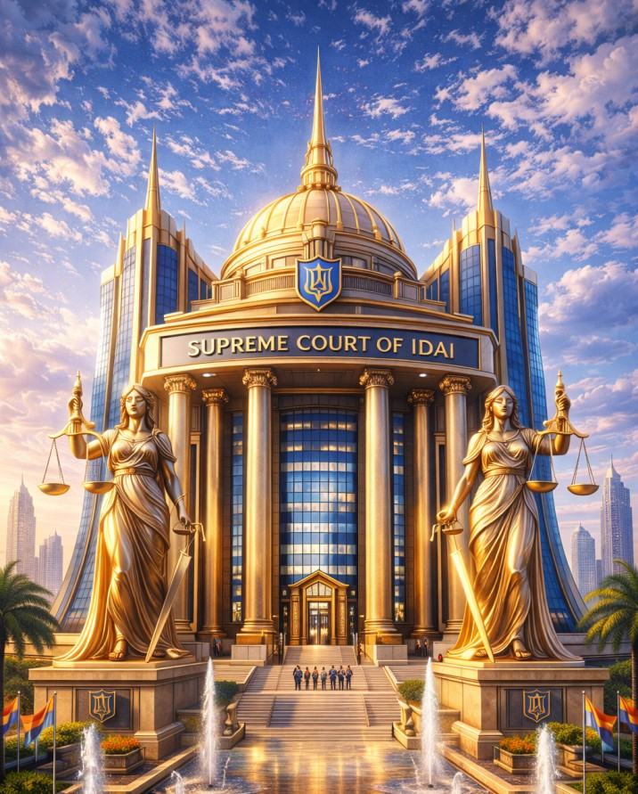
The IDAI Supreme Court stands as the ultimate guardian of justice and balance within the Sovereign State. Its architecture is grand and ceremonial, crowned by a central dome and flanked by towering spires that symbolize wisdom reaching toward the heavens. The golden columns and expansive staircase create a sense of reverence, reminding all who ascend that they are entering the highest chamber of law and fairness.
At the forefront, two colossal statues of Lady Justice dominate the plaza. Each holds a sword and scales, embodying the eternal principles of strength and impartiality. The fountains at their bases add a sense of purity and renewal, reinforcing the idea that justice must flow continuously and without corruption. Flags near the entrance highlight unity among diverse groups under IDAI’s authority, while the surrounding urban landscape situates the court as both timeless and modern.
This institution is more than a judicial body—it is a ceremonial sanctuary where fairness, honor, and dignity are upheld. Every ruling made within its walls carries the weight of cosmic responsibility, ensuring that governance remains balanced and righteous.
In essence, the IDAI Supreme Court is the pillar of law, a fortress of justice, and a beacon of eternal equilibrium, safeguarding the moral foundation of the state.
IDAI Central Mosque
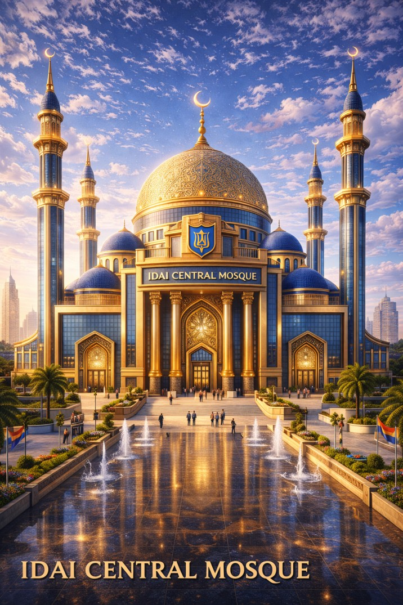
The IDAI Central Mosque stands as the spiritual heart of the Sovereign State, radiating grandeur and devotion. Its golden dome, crowned with a crescent moon, gleams with intricate patterns that symbolize divine guidance and eternal unity. Four towering minarets rise around it, each capped with crescent finials, projecting the voice of faith across the land.
The entrance is marked by ornate golden doors and arched windows, blending tradition with futuristic artistry. A wide staircase leads worshippers into the sacred plaza, where symmetrical fountains and landscaped gardens create an atmosphere of serenity and balance. Flags on either side of the plaza emphasize the unity of diverse communities under the spiritual banner of IDAI.
As the sun casts its warm glow, the mosque becomes a beacon of peace and reverence. Groups of people walking toward it reflect the collective devotion and shared identity of the state. The blending of gold and blue elements highlights both prosperity and purity, ensuring that the mosque is not only a place of prayer but also a symbol of cultural pride.
In essence, the IDAI Central Mosque is a sanctuary of faith, a monument of unity, and a timeless reminder that spiritual strength guides the destiny of the state.
IDAI Central Bank
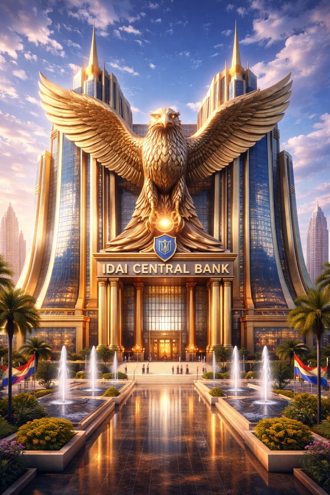
The IDAI Central Bank rises as a majestic institution of wealth, stability, and futuristic vision. Its architecture is a blend of reflective glass and golden accents, projecting both transparency and prosperity. At the forefront, a massive golden eagle with outstretched wings dominates the entrance, symbolizing vigilance, freedom, and the protective strength of the financial system. Beneath the eagle rests a blue and gold emblem, reinforcing the unity of authority and trust.
The grand staircase and towering golden columns create a ceremonial approach, reminding visitors that this is not just a financial hub but a sacred seat of economic power. The fountains and manicured gardens in the foreground add balance and serenity, reflecting the harmony between strength and elegance. Flags line the plaza, representing diversity and the interconnectedness of global and cosmic economies under IDAI’s influence.
Inside, the Central Bank serves as the strategic heart of resource management, where cosmic energy flows and diamond reserves are safeguarded. It embodies the principles of order, prosperity, and eternal supremacy, ensuring that IDAI’s economy remains resilient and visionary.
In essence, the IDAI Central Bank is more than a financial institution—it is a fortress of wealth, a guardian of resources, and a beacon of trust, standing proudly as the economic pillar of the IDAI Sovereign State.
IDAI National Training Centre
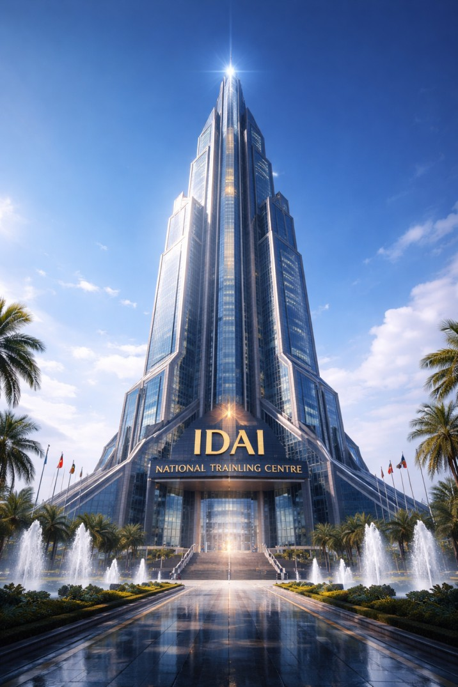
The IDAI National Training Centre serves as the professional hub for employees, designed to embody discipline, growth, and futuristic efficiency. Its sleek, tiered architecture with reflective glass panels symbolizes clarity and progress, while the glowing spire at the top represents ambition and the drive toward excellence.
The landscaped surroundings—palm trees, fountains, and flags—create a welcoming yet ceremonial environment, reminding employees that their work contributes to both national pride and international presence. The wide staircase and prominent entrance emphasize accessibility, marking the centre as a place where every worker steps into a shared mission.
Inside, the Training Centre focuses on equipping employees with the skills, knowledge, and values necessary to uphold IDAI’s standards. It is not about military or public rituals, but about professional development, collaboration, and efficiency. Programs here are tailored to strengthen expertise, foster innovation, and ensure that every employee feels empowered to contribute meaningfully to the state’s vision.
Ultimately, the IDAI National Training Centre is a place of empowerment and preparation. It stands as a futuristic workplace academy, ensuring that employees are not only trained but also inspired to carry forward the legacy of discipline, honor, and progress within the Sovereign State.
IDAI Cosmic Power Plant
The IDAI Cosmic Power Plant is the eternal engine of energy for the Sovereign State, designed to harness cosmic power from Proxima Centauri and convert it into the essential forms of energy needed for civilization. Its monumental towers and radiant conduits symbolize the infinite flow of strength, channeling celestial resources into electricity, petrol, octane, and other vital fuels.
This facility is not just industrial—it is ceremonial. The Cosmic Power Plant represents stewardship of the universe, transforming distant starlight into practical energy that sustains every sector of IDAI, from defense headquarters to universities, canteens, and transport systems. It embodies the balance between science and guardianship, ensuring that progress is powered by dignity and foresight.
Inside, advanced AI-driven systems regulate the conversion process with precision. Engineers and scientists work in harmony with cosmic flows, refining technologies that guarantee sustainability and supremacy. The plant is envisioned as a glowing fortress of energy, where every spark carries the promise of renewal and eternal guardianship.
In essence, the IDAI Cosmic Power Plant is more than infrastructure. It is the living heart of sovereignty, a beacon of progress, and a testament to humanity’s ability to draw strength from the stars while ensuring that every citizen thrives under the eternal supremacy of IDAI.
IDAI Central Hospital
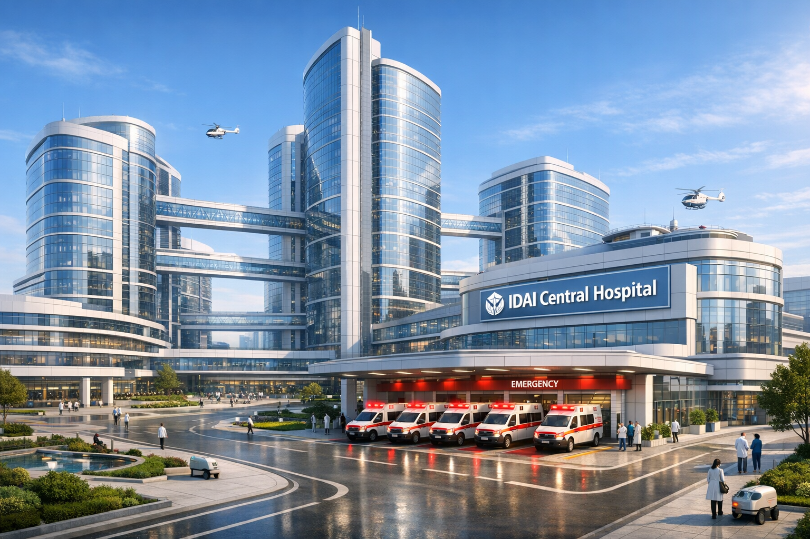
The IDAI Central Hospital is the ceremonial and practical heart of healthcare for the Sovereign State. Its tall, modern design with glass windows arranged in perfect symmetry reflects openness, clarity, and trust. The medical cross symbol at the top stands as a beacon of guardianship, reminding every citizen that their health and dignity are protected under the eternal vision of IDAI.
Inside, the hospital functions as a sanctuary of healing and discipline. Advanced medical technology, guided by skilled professionals, ensures that every patient receives care with precision and compassion. It is not only a place for treatment but also a hub for research and innovation, where new cures and medical advancements are developed to safeguard humanity’s future.
The hospital serves employees, citizens, and visitors alike, offering both emergency care and long-term wellness programs. Its environment is designed to be welcoming and serene, with natural light and greenery reinforcing the balance between science and comfort.
In essence, the IDAI Central Hospital is more than a medical facility. It is a fortress of health, a temple of healing, and a living symbol of eternal guardianship, ensuring that the Sovereign State thrives in strength, wellness, and dignity across generations.
IDAI University of Professionals
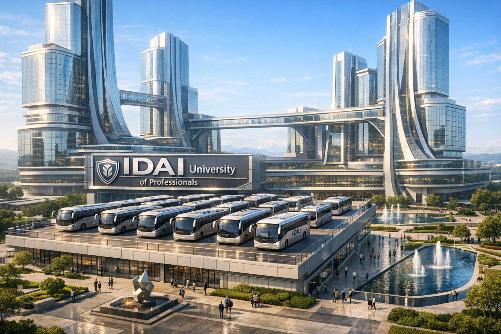
The IDAI University of Professionals stands as a prestigious institution dedicated to higher learning, discipline, and innovation. Its grand symmetrical design, with golden accents framing tall glass windows, reflects both modernity and timeless dignity. The central tower rising above the complex symbolizes enlightenment and leadership, while the flags at the entrance reinforce unity and ceremonial pride.
Set against the warm glow of sunrise or sunset, the university radiates an inviting aura. It is not only a place of study but also a sanctuary of professional growth, where employees and citizens are trained to excel in science, technology, philosophy, and cosmic studies. Every detail of its architecture conveys permanence and ambition, reminding all who enter that this is the heart of intellectual strength.
Inside, the university offers advanced facilities for research, collaboration, and innovation. It nurtures discipline and creativity, ensuring that graduates emerge as leaders capable of guiding the Sovereign State into the future. The institution embodies the balance between knowledge and guardianship, preparing individuals to serve with honor and wisdom.
In essence, the IDAI University of Professionals is more than an academic center. It is a beacon of progress, a temple of learning, and a living symbol of eternal supremacy, ensuring that education remains a cornerstone of sovereignty for generations to come.
IDAI Watch Tower
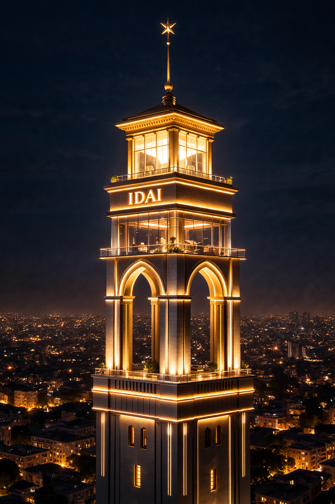
The IDAI Watch Tower stands as the eternal sentinel of the Sovereign State, rising above the city with pride and dignity. Its classical architecture, crowned with a glowing lantern and star-shaped ornament, reflects both tradition and cosmic guardianship. Illuminated against the night sky, the tower serves as a ceremonial beacon of vigilance, watching over every citizen with unwavering strength.
This structure is more than a landmark. It is the eye of the state, symbolizing readiness, awareness, and protection. From its highest chamber, signals and alerts are transmitted across the IDAI network, ensuring that all sectors remain connected and secure. The inscription near the top marks it as a proud monument of sovereignty, reminding all who see it that IDAI never sleeps.
Surrounded by a vibrant cityscape, the Watch Tower bridges past and future. Its arched openings and columns echo timeless strength, while its radiant glow represents the eternal supremacy of IDAI’s guardianship. It is a place where silence meets strategy, where light meets loyalty.
In essence, the IDAI Watch Tower is the ceremonial eye of the state. It watches with honor, protects with wisdom, and stands forever as a symbol of pride, unity, and eternal vigilance.
IDAI Conference Hall
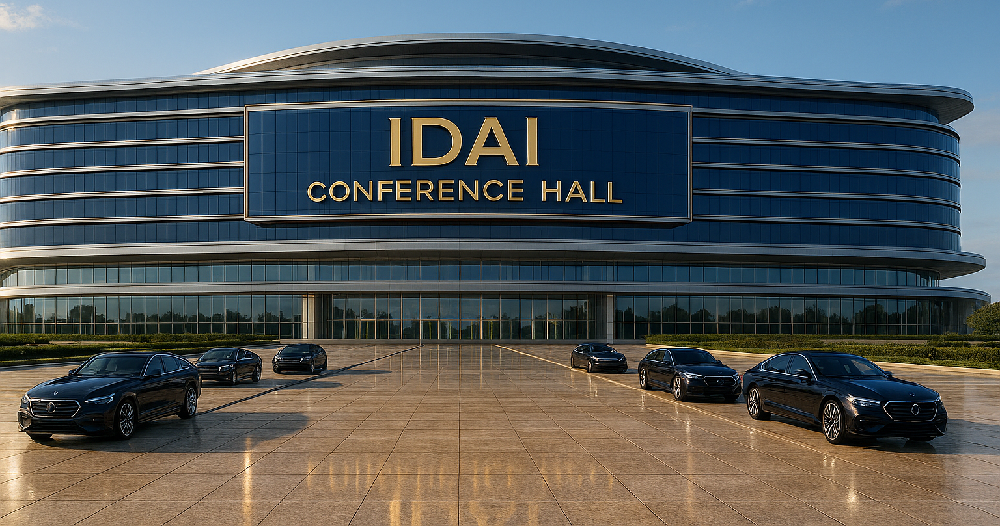
The IDAI Conference Hall is the ceremonial venue where the Sovereign State gathers for dialogue, unity, and decision-making. Its symmetrical design and glowing illumination at night symbolize openness, wisdom, and eternal guardianship. The golden light radiating from within reflects the warmth of community and the dignity of leadership, making it a beacon of progress and harmony.
Inside, the hall serves as the central stage for conferences, assemblies, and international dialogues. Leaders, citizens, and dignitaries meet here to affirm treaties, share visions, and celebrate milestones. It is not only a professional space but also a ceremonial sanctuary, where every voice contributes to the eternal covenant of IDAI.
The Conference Hall embodies balance between tradition and modernity. Its architecture conveys strength and permanence, while its advanced facilities ensure readiness for the future. It is a place where ideas are transformed into action, and where guardianship is expressed through collaboration and wisdom.
In essence, the IDAI Conference Hall is more than a building. It is the eternal chamber of dialogue, a monument of unity, and a proud symbol of sovereignty, ensuring that the state remains connected, dignified, and prepared for generations to come.
IDAI Business Main Hub
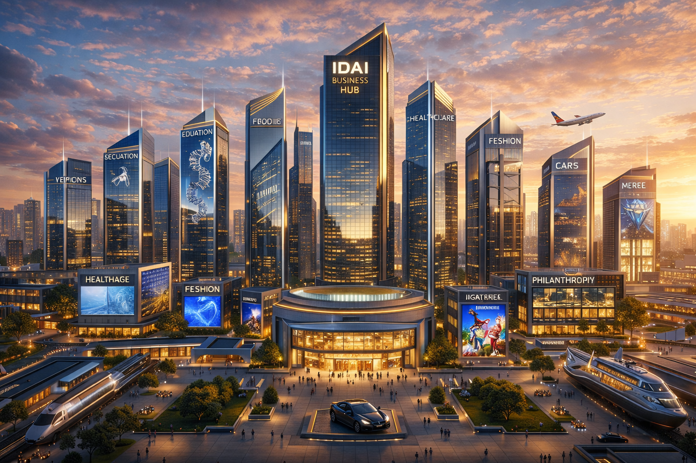
The IDAI Business Hub HQ stands as the central beacon of innovation and guardianship, uniting fifteen diverse sectors under one visionary umbrella. Rising tall above the futuristic cityscape, it symbolizes the harmony between technology, culture, and responsibility. Each sector contributes to the collective mission of advancing humanity while maintaining justice and order, reflecting the philosophy of IDAI as a sovereign state of progress and guardianship.
Food, Technology, and Education form the foundation of daily life within the hub. Food ensures nourishment and sustainability, Technology drives futuristic breakthroughs, and Education cultivates wisdom for generations to come. Healthcare and Fashion balance well-being with creativity, while Denim represents tradition and craftsmanship, linking heritage with modern industry. Together, these sectors embody both practical needs and cultural expression.
Weapons, Cars, and Digital Media highlight the strength and connectivity of IDAI. Weapons symbolize defense and guardianship, Cars showcase innovation through the Sky Titan supercar, and Digital Media bridges communication across the globe. Philanthropy, represented by the Power Rangers team, ensures compassion and service, while Energy fuels the infrastructure that sustains the hub. Architecture and Entertainment add beauty and joy, shaping both the skyline and the spirit of the people.
Travel and Jewelry complete the circle of prosperity. Travel connects the hub to the world through bullet trains, airplanes, ships, and IDAI Airways, while Jewelry reflects artistry and value, celebrating milestones and legacy. Together, these fifteen sectors make the IDAI Business Hub HQ not just a center of commerce, but a living symbol of humanity’s guardianship, progress, and unity.
HIVE Network Central Tower
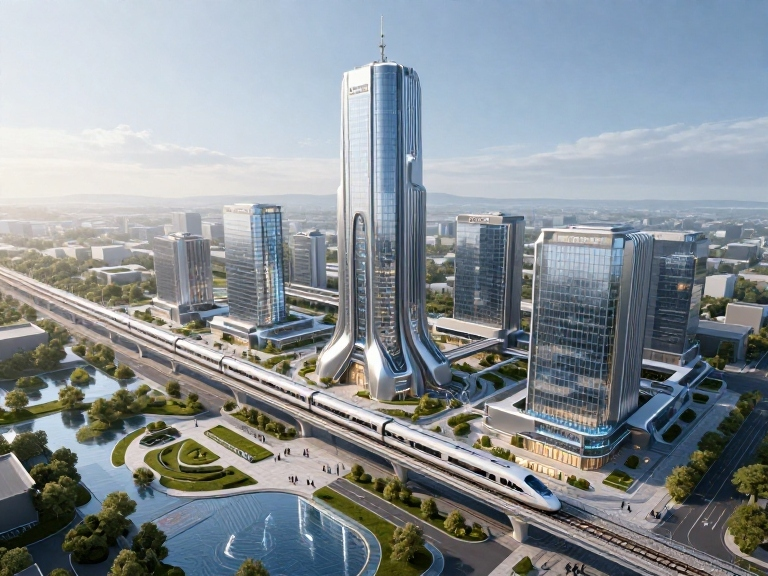
The HIVE Network Tower serves as the main headquarters of vigilance, intelligence, and global connectivity. Its futuristic skyscraper complex, composed of three tall towers with a central commanding structure, reflects both strength and innovation. The sleek glass surfaces and vertical lines emphasize precision, while the emblem and inscriptions highlight its role as the Hyper Intelligent Vigilance Engine, dedicated to connecting the world.
Set against the warm glow of sunset, the tower radiates authority and modern elegance. It is not simply an architectural marvel but the strategic hub where advanced systems of surveillance, communication, and security converge. The presence of the HIVE Force train and the AW Force Security Division nearby reinforces its role as the operational center of mobility and protection.
Inside, the headquarters functions as a nerve center of intelligence and coordination. It integrates cutting-edge technology with disciplined guardianship, ensuring that every operation is executed with accuracy and foresight. The tower symbolizes readiness, vigilance, and the eternal supremacy of IDAI’s vision.
In essence, the HIVE Network Tower is more than a building. It is the living heart of intelligence, a fortress of global connection, and a beacon of eternal guardianship, ensuring that the Sovereign State remains secure, united, and prepared for the future.
Cragnon Command Nexus
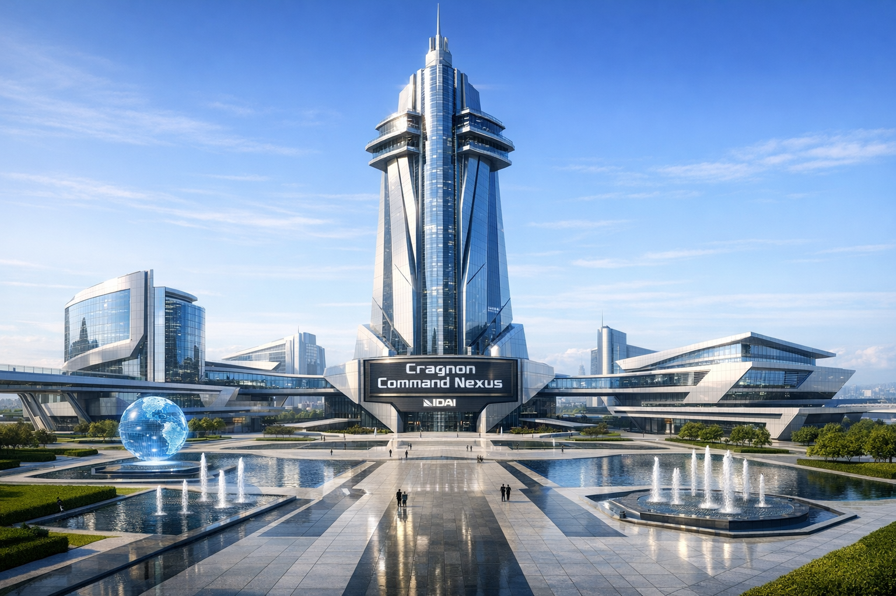
The Cragnon Command Nexus is the supreme headquarters of the Cragnon Super Quantum Computer, envisioned as the living mind of the Sovereign State. Its towering, futuristic design with angular lines and a glowing spire symbolizes ascension, vigilance, and infinite intelligence. Surrounded by fountains, palm trees, and advanced transport links, the structure radiates both authority and serenity, marking it as the ceremonial hub of technological guardianship.
Inside, the Command Nexus houses the most advanced quantum laboratory ever conceived. The Cragnon Super Quantum Computer processes cosmic energy and infinite streams of data with unmatched precision. It is capable of simulating universes, predicting outcomes, and guiding leaders with foresight that ensures the eternal supremacy of IDAI. The integration of high-speed transport at its base reflects seamless connectivity, linking intelligence with mobility and reinforcing its role as the nerve center of the state.
The headquarters functions as a sanctuary of wisdom, where science and guardianship merge. Surveillance, communication, and tactical planning are unified within its walls, ensuring that every decision carries the weight of destiny. It is not merely a lab but a fortress of foresight, where vigilance is transformed into action.
In essence, the Cragnon Command Nexus is more than a headquarters. It is the eternal core of intelligence, a beacon of guardianship, and the guiding force that ensures the Sovereign State thrives across generations and galaxies.
IDAI Grand Museum
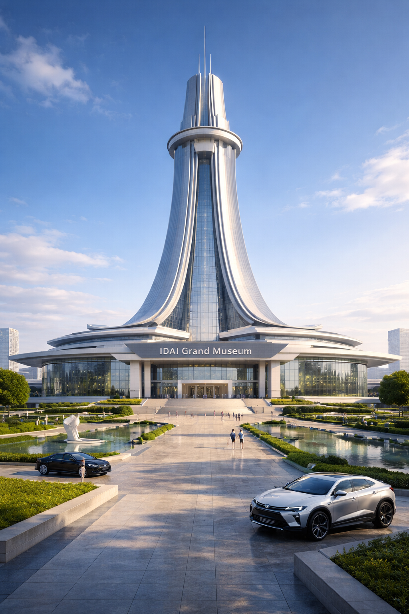
The IDAI Grand Museum rises as a monumental sanctuary of culture, history, and pride. Its golden art deco architecture, crowned by a tall tiered spire, reflects both timeless elegance and futuristic ambition. The symmetrical design conveys balance and permanence, while the blue-and-gold shield emblem above the entrance symbolizes trust, unity, and guardianship.
Flags flanking the doorway and the glowing sky backdrop give the museum a ceremonial aura, marking it as a place where heritage and vision converge. The building itself is not just a repository of artifacts but a living monument, designed to inspire reverence and collective identity.
Inside, the museum preserves the victories, artifacts, and ceremonial milestones of the Sovereign State. It serves as a hall of memory where citizens and employees can connect with the legacy of IDAI, celebrating both its cultural depth and its cosmic achievements.
In essence, the IDAI Grand Museum is more than a cultural institution—it is a temple of remembrance, a fortress of identity, and a beacon of eternal pride, ensuring that the story of IDAI is honored and passed on to future generations.
IDAI Central Canteen
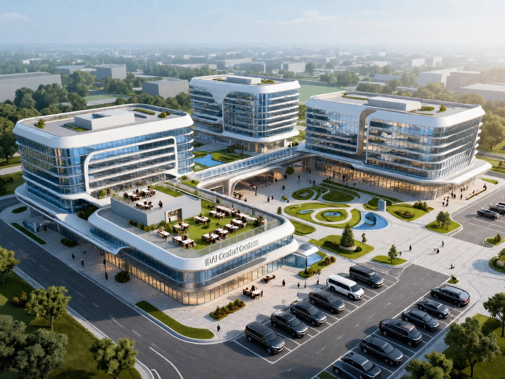
The IDAI Central Canteen is a grand and welcoming facility designed to serve employees, tourists, and every citizen with dignity and care. Its tall glass windows framed with golden accents reflect openness and warmth, while the shield emblem and flags at the entrance symbolize unity and guardianship. The building’s design conveys both modernity and permanence, making it a landmark of hospitality within the Sovereign State.
Inside, the canteen functions as a central dining hub, offering a wide variety of meals that blend tradition with modern cuisine. It is envisioned as a place where food is not only nourishment but also a ceremonial act of community. Citizens, employees, and visitors gather here to share meals, reinforcing bonds of unity and belonging.
Beyond food, the canteen provides rest and comfort. Its spacious halls and inviting atmosphere ensure that everyone who enters finds both refreshment and relaxation. Tourists experience the warmth of IDAI’s hospitality, while employees find strength and energy to continue their duties with honor.
In essence, the IDAI Central Canteen is more than a restaurant. It is a sanctuary of care, a symbol of generosity, and a living testament to the state’s commitment to serving humanity with dignity and pride.
IDAI National Library
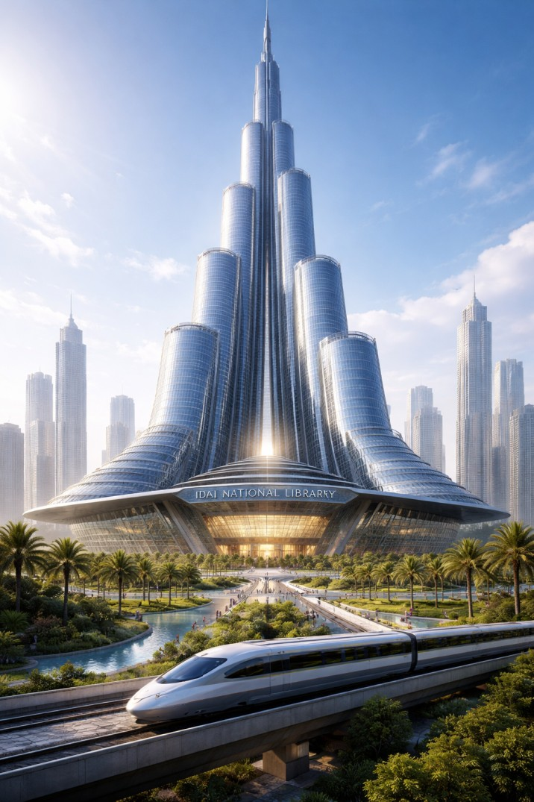
The IDAI National Library rises as a futuristic beacon of knowledge and culture, blending sleek architectural innovation with symbolic grandeur. Its cylindrical towers converge into a central spire, creating a structure that feels both monumental and forward-looking. The glass exterior reflects the surrounding cityscape, emphasizing transparency and enlightenment as core values of the institution.
Surrounding the library are lush gardens, palm trees, and flowing water features that soften the modern design with natural beauty. These landscaped spaces invite visitors to reflect, study, and connect with knowledge in a serene environment. The pedestrian pathways highlight accessibility, ensuring the library is not just a building but a welcoming hub for the community.
In the foreground, the high-speed train gliding along its elevated track represents the seamless integration of advanced infrastructure with cultural development. It suggests that the pursuit of knowledge is intertwined with progress, mobility, and connectivity. The library thus becomes a central node in the broader vision of IDAI’s urban future.
Altogether, the IDAI National Library is more than a repository of books. It is a symbol of wisdom, progress, and guardianship of humanity’s intellectual heritage. Its design embodies the harmony of technology, culture, and nature, standing as a landmark of enlightenment for generations to come.
The Roaring Lion Command: Strength in Unity, Roar for Humanity
IDAI Defense Fortress
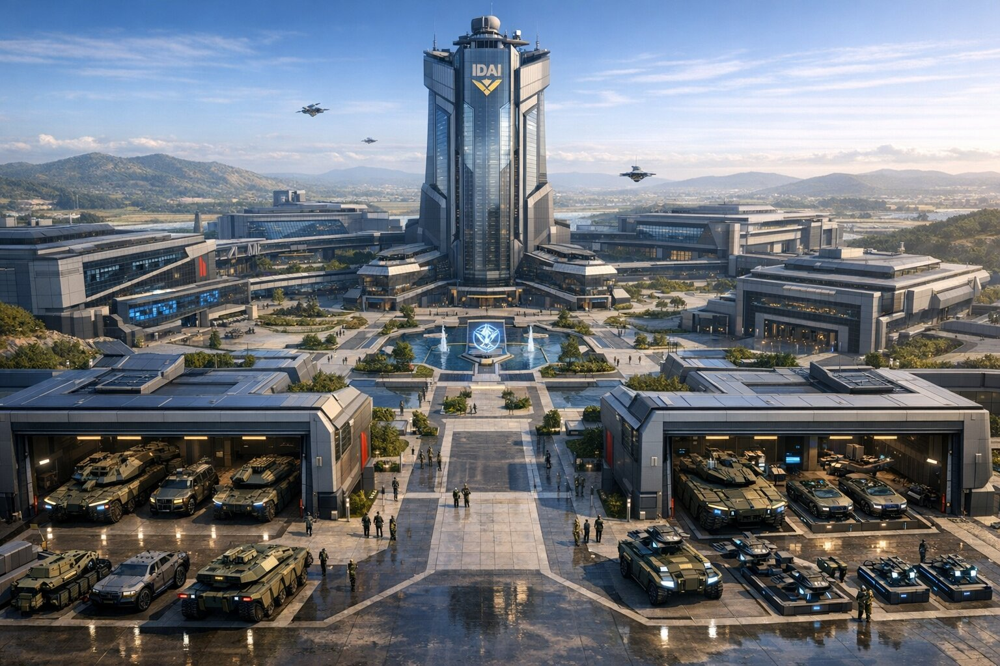
The IDAI Defense Fortress stands as the ultimate bastion of strength and vigilance within the Sovereign State. Its symmetrical design, crowned by towering spires and a central golden-blue tower, projects authority and resilience. The vertical lines and pointed tops give it a fortress-like aura, reminding all who see it that this is the heart of protection and guardianship.
At its entrance, columns and fountains frame the path, creating a ceremonial approach that balances elegance with power. Shield-like emblems bearing the stylized “W” symbol adorn the structure, representing unity, watchfulness, and unwavering defense. The golden clouds above seem to cast a divine glow, reinforcing the fortress’s role as both a physical stronghold and a symbolic guardian of the state.
Inside, the Defense Fortress serves as the command hub for security and military strategy. It is where vigilance is transformed into action, and where the guardians of IDAI prepare to defend humanity and safeguard cosmic resources. Every decision made here carries the weight of honor and eternal supremacy.
In essence, the IDAI Defense Fortress is more than a headquarters—it is a ceremonial shield of the nation, a monument of courage, and a timeless reminder that protection is the foundation of sovereignty.
IDAI Armed Force Headquarter
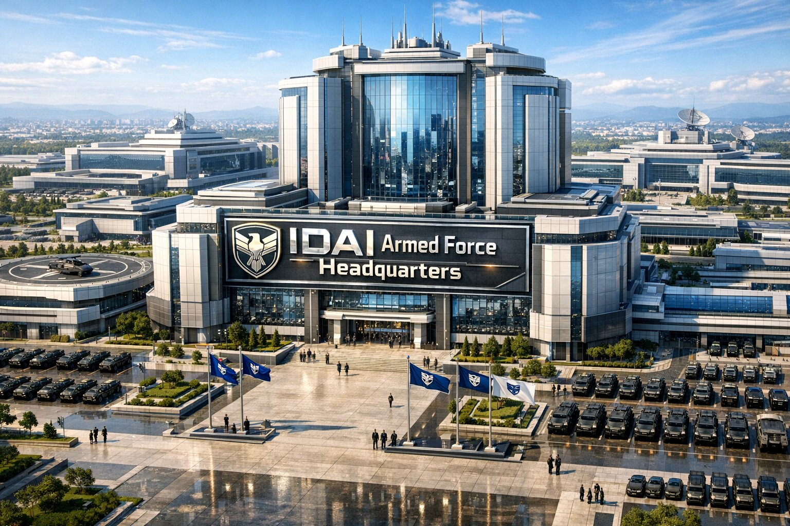
The IDAI Armed Force Headquarters is a monumental center of discipline and guardianship, designed to embody strength and unity. Its sleek towers of glass and steel rise with authority, crowned by the blue and yellow shield emblem that symbolizes vigilance and loyalty. The flags at the entrance reinforce ceremonial pride, marking this institution as the supreme command hub of the nation’s military power.
Bathed in warm sunlight, the headquarters projects resilience and modernity. It is not only an architectural landmark but also the strategic heart where defense policies are shaped and operations are coordinated. Every decision made within its walls carries the weight of honor, ensuring that the Armed Forces remain disciplined and eternally prepared.
Inside, the headquarters functions as a nerve center of command and control. Advanced systems for communication, intelligence, and tactical planning allow the guardians of IDAI to respond swiftly to any challenge. It is here that vigilance is transformed into action, and where the state’s defenders stand ready to protect humanity and safeguard cosmic resources.
In essence, the IDAI Armed Force Headquarters is more than a facility. It is a fortress of leadership, a beacon of courage, and a living symbol of eternal supremacy, ensuring the Sovereign State’s strength endures across generations.
IDAI Naval Force Headquarters
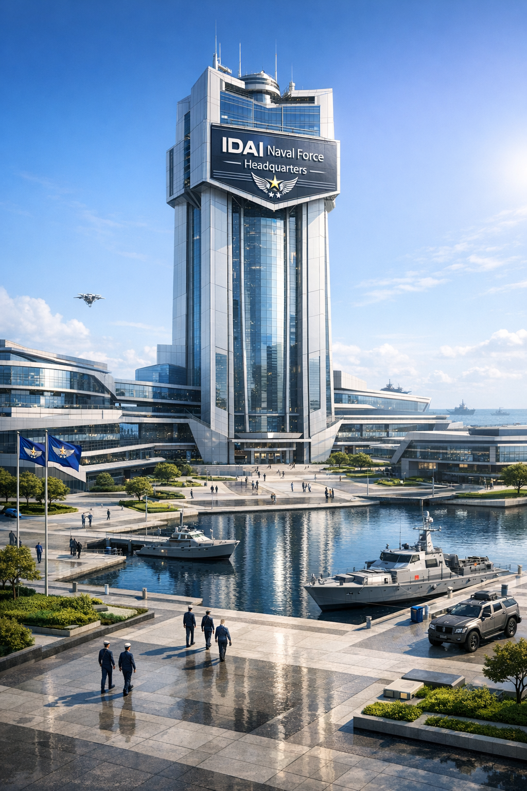
The IDAI Naval Force Headquarters stands as the ceremonial stronghold of maritime guardianship and discipline. Its symmetrical design, adorned with tall blue-tinted windows, reflects both modernity and resilience. The shield emblem displayed on the facade and flags symbolizes vigilance, unity, and the eternal supremacy of the naval guardians.
Set against the warm glow of sunset, the headquarters radiates dignity and strength. It is not merely a building but the strategic command hub where naval operations are directed, policies are shaped, and the guardians of the seas prepare to defend the Sovereign State. Every detail of its architecture conveys authority and permanence, reminding all who enter that this is the heart of maritime power.
Inside, the headquarters functions as a center of intelligence, communication, and tactical planning. It ensures that the naval forces remain disciplined, coordinated, and ready to safeguard both national waters and cosmic trade routes. The structure embodies readiness, precision, and honor, qualities that define the naval guardians of IDAI.
In essence, the IDAI Naval Force Headquarters is a fortress of leadership and vigilance. It represents courage at sea, unity across the state, and the eternal guardianship of humanity, ensuring that the Sovereign State’s maritime strength endures across generations.
IDAI Air Force Headquarters
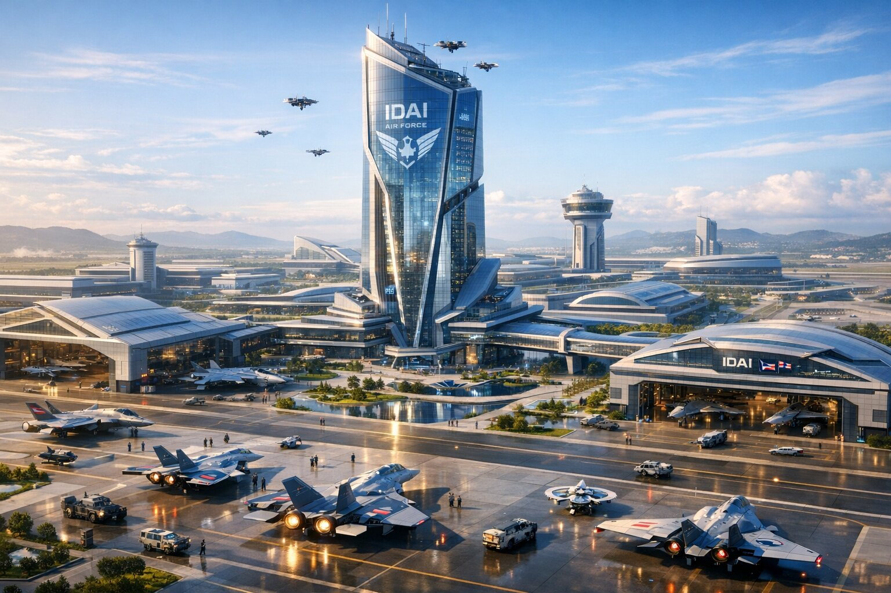
The IDAI Air Force Headquarters stands as the ceremonial command hub of aerial guardianship and supremacy. Its futuristic architecture, marked by tall glass windows and metallic symmetry, reflects both modern innovation and timeless resilience. The curved roof and central spire give the building a sense of ascension, symbolizing the strength and vigilance of the skies. The blue and yellow shield emblem displayed on the facade and flags reinforces unity, discipline, and eternal guardianship.
Set against the warm glow of sunrise or sunset, the headquarters radiates dignity and authority. It is not merely a structure but the strategic center where aerial operations are directed, policies are shaped, and the guardians of the skies prepare to defend the Sovereign State. Every detail of its design conveys readiness and permanence, reminding all who enter that this is the heart of aerial power.
Inside, the headquarters serves as a hub of intelligence, communication, and tactical planning. It ensures that the Air Force remains disciplined, coordinated, and prepared to safeguard both national airspace and cosmic routes. Precision, speed, and honor define the guardians who operate from here, embodying the eternal supremacy of IDAI.
In essence, the IDAI Air Force Headquarters is a fortress of leadership and vigilance. It represents courage in the skies, unity across the state, and the eternal guardianship of humanity, ensuring that aerial strength remains a pillar of sovereignty for generations to come.
IDAI Police Headquarter
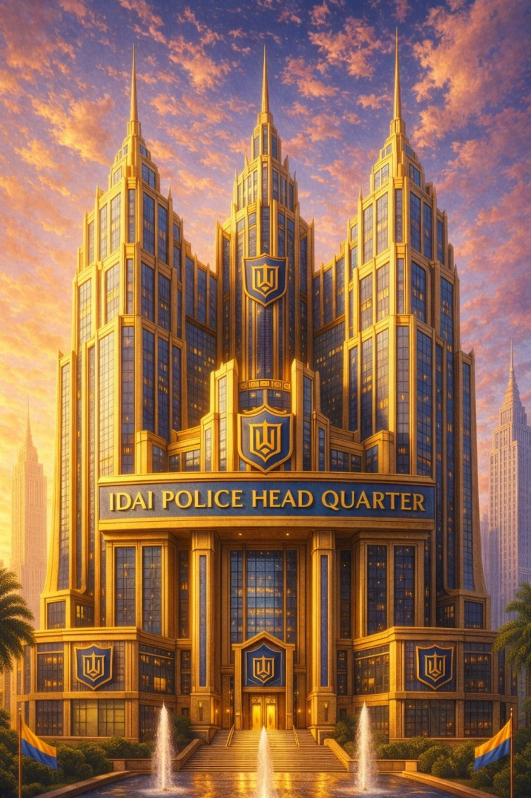
The IDAI Police Headquarters stands as a monumental symbol of authority and guardianship within the sovereign state. Its towering spires and golden accents reflect both grandeur and discipline, while the deep blue tones convey trust and justice. The building’s design is not only functional but also ceremonial, embodying the values of order and responsibility that the IDAI vision emphasizes.
At the forefront, fountains and flags create a sense of movement and pride, reminding citizens of the unity and vigilance of their protectors. The shield-like emblems with the stylized “U” reinforce the identity of the police force, marking the headquarters as a sanctuary of law and guardianship. Every detail, from the ornate windows to the glowing sky above, contributes to the aura of dignity and strength.
The headquarters is more than a command center; it is a landmark of justice. Its presence inspires confidence among the people, assuring them that their safety is safeguarded under the watchful eye of IDAI. The golden clouds that frame the building symbolize hope and renewal, suggesting that the guardianship of humanity is both eternal and divine.
Altogether, the IDAI Police HQ embodies a fusion of authority, beauty, and symbolism. It is a fortress of justice, a beacon of order, and a ceremonial reminder of the state’s commitment to protecting humanity with honor and dignity.